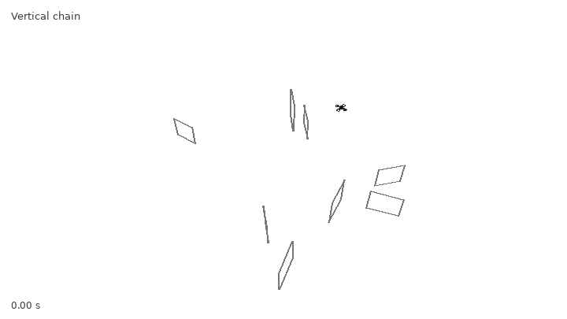
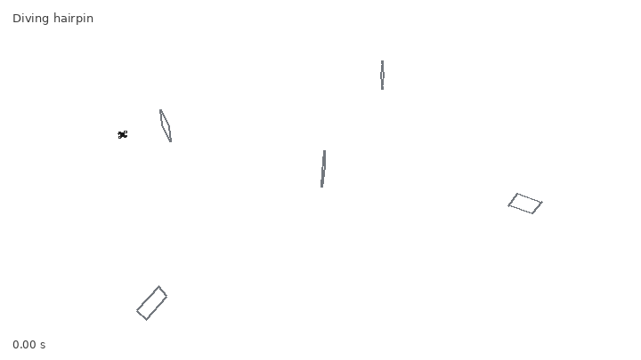
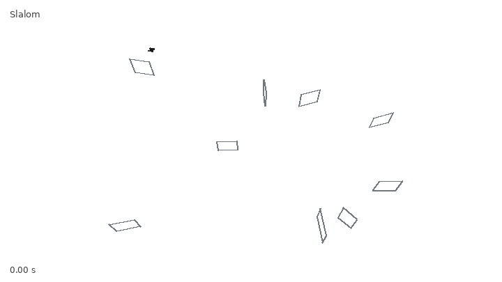
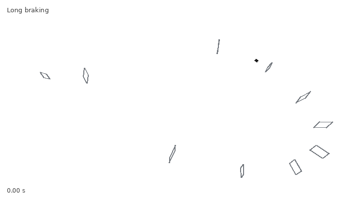
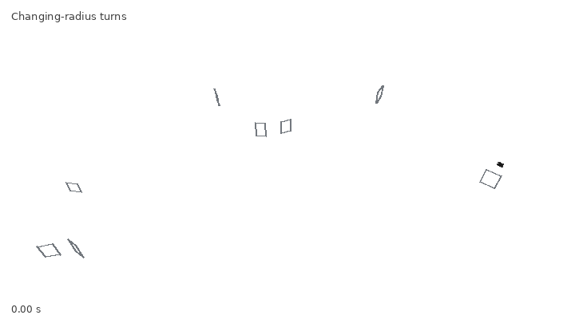
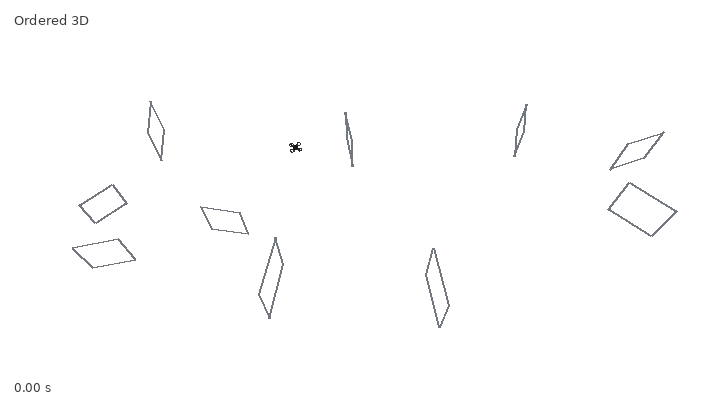
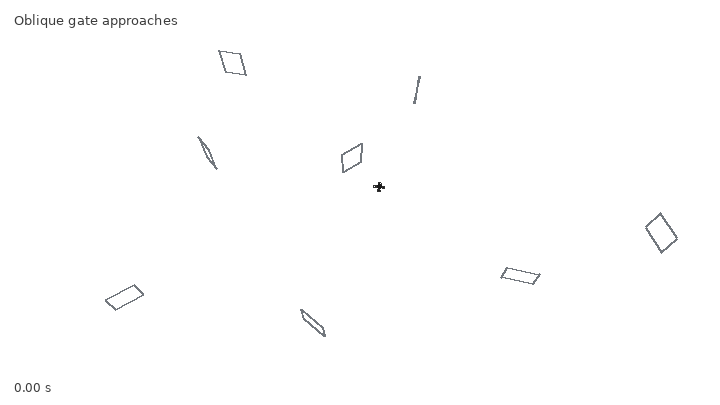

v6.21.1 update-fix — real100-v2
Curated full successful episodes, selected from 32 seeds per course. Zero detected missed active-gate crossings. Real-time playback.

Vertical chain · 7.65 s · episode 25 · seed 2034116687
 Compound reversal (edited showcase course) · 6.65 s · episode 15 · seed 2034106597
Compound reversal (edited showcase course) · 6.65 s · episode 15 · seed 2034106597

Diving hairpin · 6.13 s · episode 8 · seed 2034099534

Slalom · 8.08 s · episode 1 · seed 2034092471

Long braking · 10.18 s · episode 15 · seed 2034106597

Changing-radius turns · 10.85 s · episode 1 · seed 2034092471

Ordered 3D · 7.31 s · episode 22 · seed 2034113660

Oblique gate approaches · 12.94 s · episode 28 · seed 2034119714